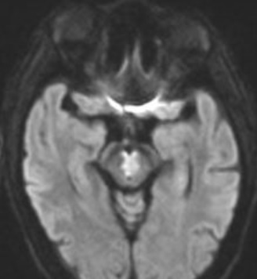

( of )
Correct: 0
Incorrect: 0
A 62 year old woman with new diplopia is found to have the clinical features of a left third nerve palsy. She also mentions that her right hand seems newly weak. Your examination confirms that fine finger movements of the right hand are relatively poor, but she has normal coordination in all four limbs. The right nasolabial fold is depressed and the right lower facial muscles are relatively weak. Speech is distinct, but she has circumduction of her right leg when she walks. Deep tendon reflexes are accentuated in the right extremities relative to the left extremities.

Where is the lesion?
Incorrect
Incorrect
Correct!

 This is a classic “Weber syndrome” of third nerve palsy and contralateral hemiparesis. It arises from a lesion in the left third nerve fascicles as they pass through the cerebral peduncle,
which carries corticopontine fibers that cross in the rostral pons and corticospinal fibers that cross in the medullary pyramids to innervate musculature on the opposite side of the body.
Most third nerve palsies have no accompanying neurologic abnormalities, and occur in the subarachnoid segment of the third nerve. This is different. It is a “third nerve palsy plus” syndrome and implies a lesion of the ventral midbrain, usually an infarction in the domain an occluded paramedian arterial perforator. Of course, inflammations and cancers can also do this. Aneurysm is not a consideration. This stroke may be an early sign of rostral basilar thrombosis, so prompt vascular imaging and surveillance is necessary. MRI may show restricted diffusion in the ventral midbrain,
This is a classic “Weber syndrome” of third nerve palsy and contralateral hemiparesis. It arises from a lesion in the left third nerve fascicles as they pass through the cerebral peduncle,
which carries corticopontine fibers that cross in the rostral pons and corticospinal fibers that cross in the medullary pyramids to innervate musculature on the opposite side of the body.
Most third nerve palsies have no accompanying neurologic abnormalities, and occur in the subarachnoid segment of the third nerve. This is different. It is a “third nerve palsy plus” syndrome and implies a lesion of the ventral midbrain, usually an infarction in the domain an occluded paramedian arterial perforator. Of course, inflammations and cancers can also do this. Aneurysm is not a consideration. This stroke may be an early sign of rostral basilar thrombosis, so prompt vascular imaging and surveillance is necessary. MRI may show restricted diffusion in the ventral midbrain,
yet very often the stroke is too small to show up. Even so, assume there is a stroke and direct your attention to future stroke prevention caused by disorders affecting small arterial vessels.

Incorrect